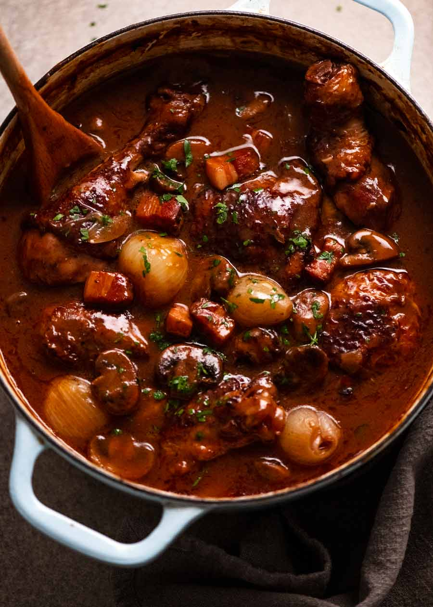
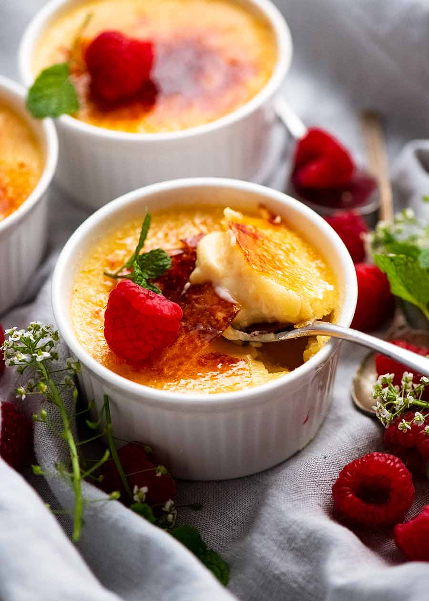

French Croissant Recipe

- 500g all-purpose flour
- 10g salt
- 80g granulated sugar
- 10g instant yeast
- 300ml cold water
- 250g unsalted butter, chilled
- 1 egg, beaten (for egg wash)
- Mix flour, salt, sugar, and instant yeast in a large bowl.
- Add cold water gradually, mixing until a rough dough forms.
-
Knead the dough on a lightly floured surface for about 10 minutes
until smooth and elastic.
-
Shape the dough into a rectangle, wrap in plastic wrap, and
refrigerate for at least 1 hour.
-
Prepare the butter block by pounding and rolling chilled butter into a
square.
-
Roll out the dough, place butter block in the center, fold dough over
butter, and repeat folding and chilling.
-
Roll out dough, cut into triangles, and shape croissants. Proof and
bake until golden brown.
Coq au Vin Recipe

- 4 chicken thighs
- 200g bacon, diced
- 250ml red wine
- 250ml chicken broth
- 12-15 pearl onions, peeled
- 200g mushrooms, sliced
- 2 cloves garlic, minced
- 2 tbsp butter
- 2 tbsp all-purpose flour
- Fresh thyme
- Salt and pepper to taste
-
In a large skillet, cook diced bacon until crispy. Remove and set
aside.
-
Season chicken thighs with salt and pepper. Brown them in the same
skillet until golden. Remove and set aside.
-
In the same skillet, melt butter and sauté pearl onions, mushrooms,
and minced garlic until onions are caramelized.
-
Sprinkle flour over the vegetables and stir well. Cook for 1-2
minutes.
-
Slowly pour in red wine and chicken broth, stirring constantly to
avoid lumps. Bring to a simmer.
-
Return chicken and bacon to the skillet. Add fresh thyme. Cover and
simmer for 45 minutes to 1 hour, or until chicken is cooked through
and tender.
- Serve hot with crusty bread or over mashed potatoes.
Crème Brûlée Recipe

- 6 egg yolks
- 100g granulated sugar, plus extra for caramelizing
- 500ml heavy cream
- 1 tsp vanilla extract
- Berries for garnish (optional)
-
Preheat oven to 300°F (150°C). Place 6 ramekins in a baking dish.
- Whisk egg yolks and sugar until pale and creamy.
- Heat heavy cream until just simmering. Remove from heat.
- Slowly pour hot cream into egg mixture, whisking constantly.
-
Stir in vanilla extract. Strain mixture through a sieve into a pouring
jug.
-
Pour custard mixture into ramekins. Place in a baking dish with hot
water.
-
Bake for 35-40 minutes until set but slightly wobbly in the center.
-
Chill for at least 2 hours. Before serving, sprinkle sugar on top and
caramelize with a torch.
- Garnish with berries and serve.